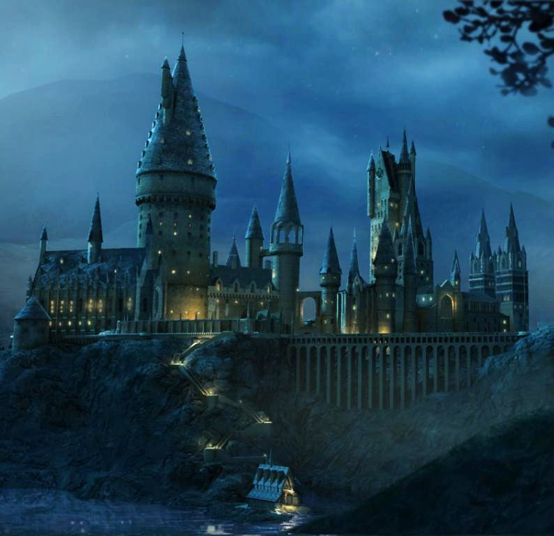

Hogwarts school
Building
View from a cliff
Hogwarts School, located somewhere in the Highlands of Scotland, consisted of the large Hogwarts Castle and extensive school grounds surrounding it, which included sloping lawns, flowerbeds, vegetable patches, as well as a loch (called the Black Lake), a large dense forest (called the Forbidden Forest), several greenhouses and other outbuildings, and a full-size Quidditch Pitch. One of the castle's towers held an owlery, which housed all the owls owned by the school and by students. The castle was set upon huge rocks above the Black Lake. Its three highest towers were the Astronomy, Ravenclaw, and Gryffindor Towers. The castle's 142 staircases were known to change position. The castle was known for its many updates and changes in layout throughout the years.It should be noted that some rooms in the school tended to "move around," as did the steps on the Grand Staircase. Albus Dumbledore once noted that even he did not know all of Hogwarts' secrets. The castle had been around for centuries, and consequently had a long history of ancient magic.
Campus life

Quidditch Stadium
Hogwarts has its own Quidditch pitch where Quidditch teams could practise, hold try-outs and play matches against each other. Each year will see a total of six inter-house matches (each house competing for the Quidditch Cup), along with numerous training sessions by each house team. The stands surrounding the pitch are decorated differently for each Quidditch match at Hogwarts School of Witchcraft and Wizardry. Every second stand would be decorated with the colours of one team, and every other stand with the colours of the opposing team. Spectators would sit in between these stands.
Entrance courtyard
The Viaduct Courtyard (also known as the Entrance Courtyard) is a quadrangle in Hogwarts Castle. A popular hang-out spot for students of all Houses, this courtyard is where some students spend their spare time playing Gobstones.A covered stone cloister with an open colonnade runs around it, and two checkpoint towers flank its entryway via the Viaduct. There is a stone walkway leading from this courtyard into The Quad, and into the Viaduct Entrance. The courtyard is partially paved, in a cross pattern.
Grand staircase
The Grand Staircase was a massive stairway in Hogwarts Castle, the structure was mainly used to access each floor of the castle, including the dungeons. Rowena Ravenclaw was the Hogwarts founder who invented the concept of moving stairs.There were hundreds of Portraits covering the walls in this tower, some of which concealed secret passages to other areas within the school. The multiple staircases in the Grand Staircase led from platform to platform and went as high as the seventh floor where they came to an end. The stairs also had a knack for moving around the staircase chamber, usually when a student was walking up one of them. There were also many trick stairs that caused the victim to sink through a step and required another person to pull them out. However, it was second nature to most of the older students to jump them.
Acheivements
Conducdeted the triwizard tournament of 1994 and won it.
"The Triwizard Tournament was a magical contest held between the three largest wizarding schools of Europe: Hogwarts School of Witchcraft and Wizardry, Durmstrang Institute, and Beauxbatons Academy of Magic, each school being represented by one Champion. Selected Champions compete in three tasks — traditionally judged by the Headmasters or Headmistresses of the competing schools — designed to test magical ability, intelligence, and courage. Champions competed for the honour and glory of winning the Tournament, for the Triwizard Cup, and a monetary prize. The first Tournament was held sometime around the late 13th century."
Survived the second wizarding war and deafeated voldemort for good.
The Battle of Hogwarts was the final conflict of the Second Wizarding War. It took place in the early hours of 2 May, 1998, within the castle and on the grounds of Hogwarts School of Witchcraft and Wizardry in the mountainous region of Scotland.[2] When the Dark Wizard Lord Voldemort learned that his archenemy Harry Potter had secretly ventured into the castle to locate and destroy one of his final Horcruxes, he ordered every single Death Eater and dark creature that had ever pledged loyalty to him to launch a massive attack on the school. Dumbledore's Army then communicated the need to fight to the Order of the Phoenix and their other allies within the British Ministry of Magic, leading to a large-scale battle. Voldemort led his forces from the Shrieking Shack in Hogsmeade; while Harry Potter, Kingsley Shacklebolt and Minerva McGonagall led the defenders of Hogwarts. Voldemort also announced that he wanted Harry Potter to surrender himself by midnight.[4] The battle ended with a decisive victory for the Order and the D.A., with many Death Eaters and Voldemort himself dead. It was the most devastating battle of the war, with casualties including: Lord Voldemort, Bellatrix Lestrange, Remus Lupin, Nymphadora Tonks, Severus Snape, Fred Weasley, Colin Creevey, Lavender Brown, and at least fifty more who fought against Voldemort and his Death Eaters.[5] It is also assumed to be the final conflict in which the Elder Wand took part, due to it being resealed in Albus Dumbledore's tomb after the battle.
What's new
-
Reparing of Quidditch pitch wich was destroyed in the Battle of Hogwarts
Hogwarts has recently rebuilt the quidditch pitch destroyed by the snatchers in the battle of Hogwarts
-
Children of the great wizards,'Harry potter','Hermoine granger','Ron weasley' come to Hogwarts
James Sirius Potter, Albus Severus Potter,Lilly Luna Potter, Rose weasley, Hugo weasley come at Hogwarts at the time of 2014 to 2017
Alumini
.jpg)
Neville longbottom
Nevile longbottom
The current herbology teacher and the member of D.A who killed Nagini the snake saving Ron Weasley's and Hermoine grangers life as well as destroing the final horcux
TO KNOW MORE
Filius Flitwik
Contact us